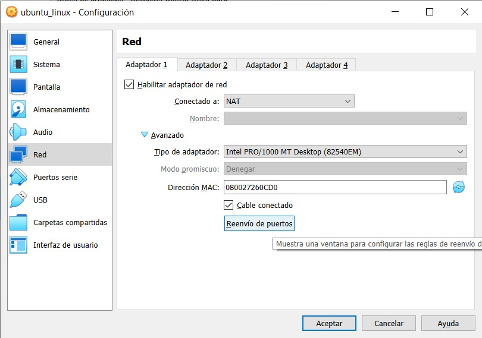
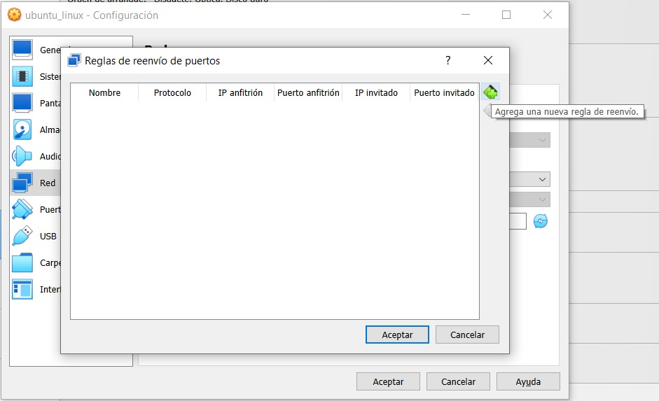
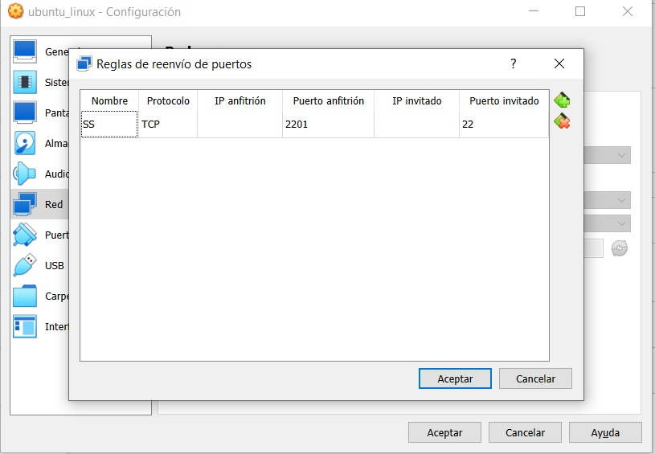

Introducción
Instalación de Ubuntu Server en una máquina virtual
Instalación de Ubuntu en VirtualBox
- Prerrequisitos:
- VirtualBox instalado. Descarga instalador de la siguiente liga : https://www.virtualbox.org/wiki/Downloads
- Contar con una imagen ISO de Ubuntu 22.04. Descarga la Server install image de la siguiente liga: https://releases.ubuntu.com/focal/
Configuración de puerto 22 en VirtualBox
Utilizaremos el protocolo SSH para tener acceso remoto a la máquina virtual que creamos por medio de un canal seguro en el que toda la información está cifrada. El puerto TCP asignado al protocolo es el 22. Por default, VirtualBox no tiene habilitados los puertos 22, por lo cual es necesario hacer un cambio en la configuración.
Para hacer cambios en la configuración, debemos apagar la máquina virtual. Una vez apagada, entramos a la opción de configuración y en la opción de "Red", en el Adaptador 1 seleccionamos la opción Reenvío de puertos.

En la pantalla emergente, seleccionamos la opción "Agrega una nueva regla de reenvío".

Definimos la siguiente configuración:

Una vez realizada la configuración de puertos, podemos acceder de forma remota al servidor con la instrucción:
ssh -p 2201 <nombre_usuario>@127.0.0.1
Generación de llaves
- Genera el par de llaves SSH con la instrucción
ssh-keygen
- Seleccionamos enter a la pregunta Enter file in which to save the key.
- No usaremos secure passphrase, por lo que utilizamos enter en las dos opciones siguientes.
- Las llaves pública (
id_rsa.pub) y privada (id_rsa) que fueron generadas se encuentran en la dirección~/.ssh. Para verificar su creación, ejecutamos las siguientes instrucciones:
cd ~/.ssh
ls
Para poder acceder al servidor mediante nuestra llave pública y así evitar colocar el password, copiamos el contenido de la llave pública (id_rsa.pub) en el archivo ~/.ssh/authorized_keys del servidor.
Para imprimir el contenido de la llave pública, desde el equipo host ejecutamos la instrucción:
cat ~/.ssh/id_rsa.pub
El contenido de este archivo lo pegamos en el archivo ~/.ssh/authorized_keys del servidor. Para esto, ejecutamos en el servidor:
nano ~/.ssh/authorized_keys
Instalación de entorno gráfico en el servidor
Para instalar el entorno gráfico GNOME en el servidor, ejecutamos en el servidor las instrucciones:
sudo apt update
sudo apt install gnome-session gdm3